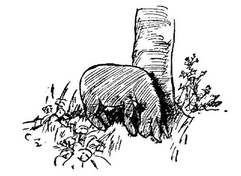
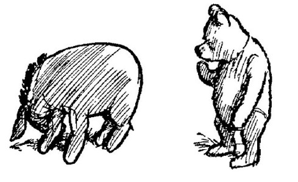
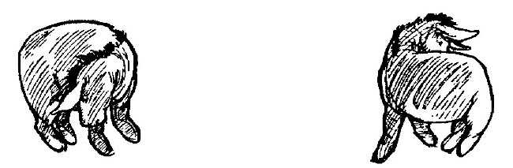
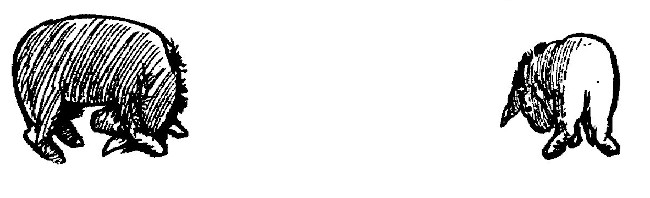
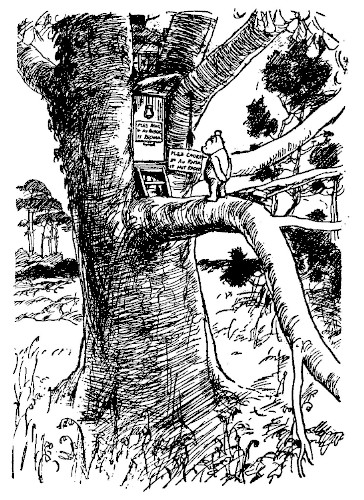
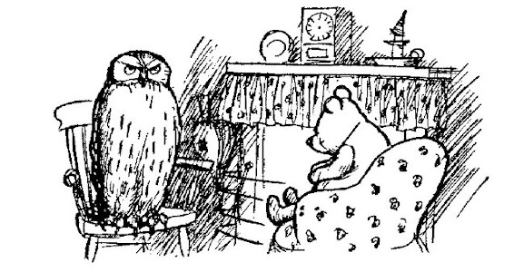
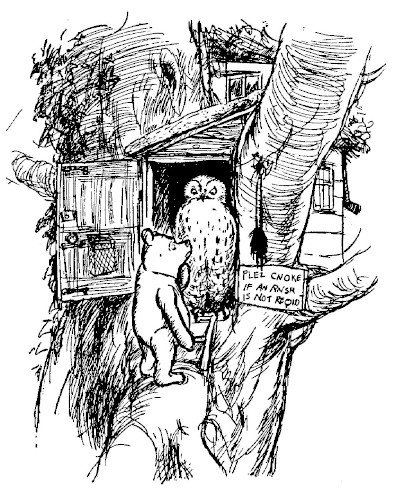
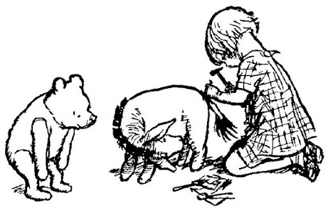
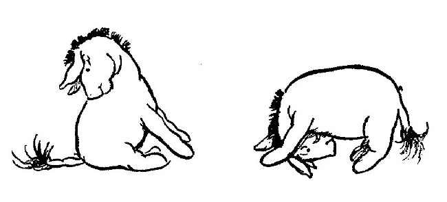
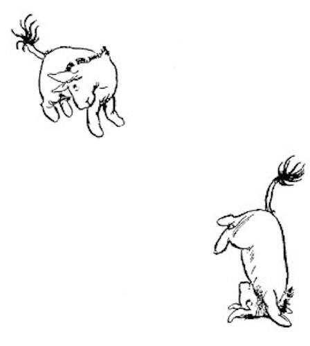

The Old Grey Donkey, Eeyore, stood by himself in a thistly corner of the forest, his front feet well apart, his head on one side, and thought about things. Sometimes he thought sadly to himself, "Why?" and sometimes he thought, "Wherefore?" and sometimes he thought, "Inasmuch as which?"—and sometimes he didn't quite know what he was thinking about. So when Winnie-the-Pooh came stumping along, Eeyore was very glad to be able to stop thinking for a little, in order to say "How do you do?" in a gloomy manner to him.
"And how are you?" said Winnie-the-Pooh.
Eeyore shook his head from side to side.
"Not very how," he said. "I don't seem to have felt at all how for a long time."
"Dear, dear," said Pooh, "I'm sorry about that. Let's have a look at you."
So Eeyore stood there, gazing sadly at the ground, and Winnie-the-Pooh walked all round him once.

"Why, what's happened to your tail?" he said in surprise.
"What has happened to it?" said Eeyore.
"It isn't there!"
"Are you sure?"
"Well, either a tail is there or it isn't there. You can't make a mistake about it. And yours isn't there!"
"Then what is?"
"Nothing."

"Let's have a look," said Eeyore, and he turned slowly round to the place where his tail had been a little while ago, and then, finding that he couldn't catch it up, he turned round the other way, until he came back to where he was at first, and then he put his head down and looked between his front legs, and at last he said, with a long, sad sigh, "I believe you're right."
"Of course I'm right," said Pooh.
"That Accounts for a Good Deal," said Eeyore gloomily. "It Explains Everything. No Wonder."
"You must have left it somewhere," said Winnie-the-Pooh.
"Somebody must have taken it," said Eeyore. "How Like Them," he added, after a long silence.

Pooh felt that he ought to say something helpful about it, but didn't quite know what. So he decided to do something helpful instead.
"Eeyore," he said solemnly, "I, Winnie-the-Pooh, will find your tail for you."
"Thank you, Pooh," answered Eeyore. "You're a real friend," said he. "Not like Some," he said.
So Winnie-the-Pooh went off to find Eeyore's tail.
It was a fine spring morning in the forest as he started out. Little soft clouds played happily in a blue sky, skipping from time to time in front of the sun as if they had come to put it out, and then sliding away suddenly so that the next might have his turn. Through them and between them the sun shone bravely; and a copse which had worn its firs all the year round seemed old and dowdy now beside the new green lace which the beeches had put on so prettily. Through copse and spinney marched Bear; down open slopes of gorse and heather, over rocky beds of streams, up steep banks of sandstone into the heather again; and so at last, tired and hungry, to the Hundred Acre Wood. For it was in the Hundred Acre Wood that Owl lived.
"And if anyone knows anything about anything," said Bear to himself, "it's Owl who knows something about something," he said, "or my name's not Winnie-the-Pooh," he said. "Which it is," he added. "So there you are."
Owl lived at The Chestnuts, an old-world residence of great charm, which was grander than anybody else's, or seemed so to Bear, because it had both a knocker and a bell-pull. Underneath the knocker there was a notice which said:
PLES RING IF AN RNSER IS REQIRD.
Underneath the bell-pull there was a notice which said:
PLEZ CNOKE IF AN RNSR IS NOT REQID.

These notices had been written by Christopher Robin, who was the only one in the forest who could spell; for Owl, wise though he was in many ways, able to read and write and spell his own name WOL, yet somehow went all to pieces over delicate words like MEASLES and BUTTEREDTOAST.
Winnie-the-Pooh read the two notices very carefully, first from left to right, and afterwards, in case he had missed some of it, from right to left. Then, to make quite sure, he knocked and pulled the knocker, and he pulled and knocked the bell-rope, and he called out in a very loud voice, "Owl! I require an answer! It's Bear speaking." And the door opened, and Owl looked out.
"Hallo, Pooh," he said. "How's things?"
"Terrible and Sad," said Pooh, "because Eeyore, who is a friend of mine, has lost his tail. And he's Moping about it. So could you very kindly tell me how to find it for him?"
"Well," said Owl, "the customary procedure in such cases is as follows."
"What does Crustimoney Proseedcake mean?" said Pooh. "For I am a Bear of Very Little Brain, and long words Bother me."
"It means the Thing to Do."
"As long as it means that, I don't mind," said Pooh humbly.
"The thing to do is as follows. First, Issue a Reward. Then——"
"Just a moment," said Pooh, holding up his paw. "What do we do to this—what you were saying? You sneezed just as you were going to tell me."
"I didn't sneeze."
"Yes, you did, Owl."
"Excuse me, Pooh, I didn't. You can't sneeze without knowing it."
"Well, you can't know it without something having been sneezed."
"What I said was, 'First Issue a Reward'."
"You're doing it again," said Pooh sadly.
"A Reward!" said Owl very loudly. "We write a notice to say that we will give a large something to anybody who finds Eeyore's tail."

"I see, I see," said Pooh, nodding his head. "Talking about large somethings," he went on dreamily, "I generally have a small something about now—about this time in the morning," and he looked wistfully at the cupboard in the corner of Owl's parlour; "just a mouthful of condensed milk or whatnot, with perhaps a lick of honey——"
"Well, then," said Owl, "we write out this notice, and we put it up all over the forest."
"A lick of honey," murmured Bear to himself, "or—or not, as the case may be." And he gave a deep sigh, and tried very hard to listen to what Owl was saying.
But Owl went on and on, using longer and longer words, until at last he came back to where he started, and he explained that the person to write out this notice was Christopher Robin.
"It was he who wrote the ones on my front door for me. Did you see them, Pooh?"
For some time now Pooh had been saying "Yes" and "No" in turn, with his eyes shut, to all that Owl was saying, and having said, "Yes, yes," last time, he said "No, not at all," now, without really knowing what Owl was talking about.
"Didn't you see them?" said Owl, a little surprised. "Come and look at them now."
So they went outside. And Pooh looked at the knocker and the notice below it, and he looked at the bell-rope and the notice below it, and the more he looked at the bell-rope, the more he felt that he had seen something like it, somewhere else, sometime before.
"Handsome bell-rope, isn't it?" said Owl.
Pooh nodded.
"It reminds me of something," he said, "but I can't think what. Where did you get it?"

"I just came across it in the Forest. It was hanging over a bush, and I thought at first somebody lived there, so I rang it, and nothing happened, and then I rang it again very loudly, and it came off in my hand, and as nobody seemed to want it, I took it home, and——"
"Owl," said Pooh solemnly, "you made a mistake. Somebody did want it."
"Who?"
"Eeyore. My dear friend Eeyore. He was—he was fond of it."
"Fond of it?"
"Attached to it," said Winnie-the-Pooh sadly.

So with these words he unhooked it, and carried it back to Eeyore; and when Christopher Robin had nailed it on in its right place again, Eeyore frisked about the forest, waving his tail so happily that Winnie-the-Pooh came over all funny, and had to hurry home for a little snack of something to sustain him. And, wiping his mouth half an hour afterwards, he sang to himself proudly:

